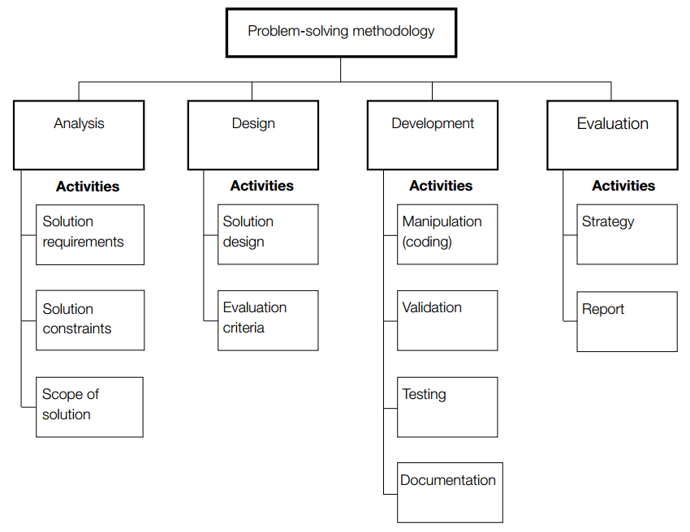

The problem solving methodology is used in computing in order to complete a solution. It involves fours steps: analysis, where you figure what you need; design, where you design the solution; development, in which you create the solution; and evaluation, where you see what could be improved.
In Unit 3 students use the problem solving methodology in order to create computerised solutions.
Outcome 1 relates to the design and development stages of the problem solving methodology.
In outcome 2 students analysise and document a need, generate design ideas and create a project plan. Which is completed in Unit 4 Outcome 1.
In unit 4 students focus on how needs of organisations are met through creation of software.
Outcome 1 relates to Unit 3 Outcome 2 as students will create the software solution that they designed.
In Outcome 2 students look at how data can have its integrety checked and understand how data systems interact.
The end of year examination will be a two hour exam that tests knowledge relating to outcomes in units 3 and 4. It is worth 50% of the students final mark.
In Computing students make use of a problem solving methodology in order to build electronic solutions. These solutions require knowledge of how people, processes, data and digital solutions interact with each other.
In Computing there are four key concepts: approches to problem solving; data and information; digital systems; and interactions and impact.
There are four key concepts in Computing: approches to problem solving, which is about thinking about problems in order to create a solution; data and information, which focuses on data collection and interpreated; digital systems, which looks at how hardware works and how it can be connected; and interactions and impact, which focuses on the releationship between people and digital systems.
There are four areas in which the final mark is calculated based of off their percent contribution.
There is a school assessed task that contributes 30% to the final score. It is based off of Unit 3 Outcome 2 and Unit 4 Outcome 1. Which will require the student to analyise and design a solution and then implement the solution using programming skills.
The components and their relationships in a software solution.
Recognising aspects of computers and thinking logically, algorithmically, recursivly and abstractly.
Ways that data is represented. Eg. integers and strings
Statement of a problem and what is required to solve it.
Characteristics that contribute to functionality and appearence of solutions.
Critical thinking to create ideas and evaluate which would work best.
The time, cost and effort that is required in a solution.
A measure of how successful a solution is in regards to the design breif.
The ways in which content is grouped in solutions
Digital hardware and software that processes data.
Laws relating to privacy and freedom of expression that must be observed when collecting data.
The process of ensuring that a database conforms to a set of normal forms.
Equipement and procedures used to ensure protection of data.
Actions, devices and events that threaten integrity of data systems.
Description of intented purpose and environment for purpose built software systems.
Software based security measures to protect integrity of data.
Creating required output through use of digital devices.
Holistic approch to designing and creating solutions to problems.
See Data Types
Aspects of how a user interacts with a solution.
Digramatic representations of how a user interacts and travels through a program.